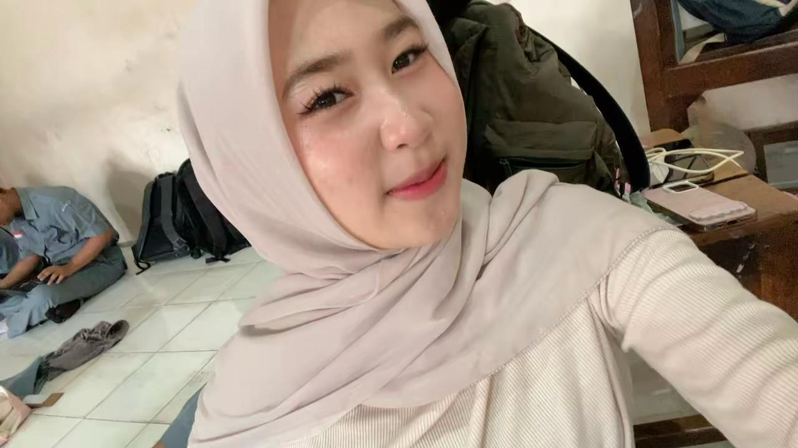

HELLOOO! 👋
Hai! Aku Shaza, orang yang suka hal-hal sederhana, cute, dan menyenangkan. Aku senang mencoba hal baru, belajar dari pengalaman, dan terus berkembang menjadi versi terbaik dari diriku.
Kenalan Yuk! ♡
ABOUT ME 🌷
Hai! Aku Shaza. Aku orangnya cukup sederhana, suka hal-hal yang lucu dan menggemaskan, dan senang menghabiskan waktu dengan hal-hal yang aku suka. Aku juga suka mencoba sesuatu yang baru walaupun terkadang masih harus belajar dari awal. Buatku, proses kecil yang dilakukan dengan konsisten tetap punya arti. Aku percaya setiap orang punya caranya sendiri untuk berkembang dan menjadi versi terbaik dari dirinya.
MY SKILLS 💻
Membuat tampilan website.
Belajar membuat aplikasi.
Mempelajari jaringan komputer.
Membuat desain yang menarik.
MY PROJECT 📚
Website untuk membantu pengelolaan data dan peminjaman buku.
Website untuk membantu mencari dan melaporkan barang yang hilang.
Aplikasi untuk membantu proses booking dan konsultasi BK.
CONTACT ME 💌
Kalau ingin menghubungi aku, bisa melalui: